「영업 제안서 승인」을 만들고, 반려된 제안서를 다시 작성해 승인받습니다. 검토 결과에 따라 갈라지는 길과 앞 단계로 돌아가는 흐름을 확인합니다.
설치본 수정이 필요합니다
이 장의 실행 화면은 아래 수정을 넣은 설치본(2026-10-30)에서 찍었습니다. 이 수정이 설치 저장소에 들어가기 전의 설치본에서는 실행이 중간에 멈출 수 있습니다. 들어가면 이 안내를 지웁니다.
- 설치: process-gpt-infra-docker #1 — 할 일 표의 빠진 열(없으면 첫 제출에서 멈춤)
- 화면: process-gpt-vue3 #234 — 실행이 첫 단계와 역할 담당자를 지키게
- 화면: process-gpt-vue3 #233 — 편집기에서 저장할 때 갈림길 조건을 지키게
이번에는 갈림길을 넣습니다#
3장에서는 갈림길을 일부러 뺐습니다. 이번에는 처음부터 승인과 반려를 말해 새 프로세스 「영업 제안서 승인」을 만듭니다.
고객이 요청사항을 입력하면 김민지가 제안서를 작성합니다. 장진영이 반려하면 김민지가 다시 작성하고, 장진영의 검토를 다시 받습니다. 승인하면 김민지가 고객 발송 단계를 처리합니다.
따라 하기 1 — 대화로 프로세스 만들기#
- 3장처럼 새 대화를 열고 「기본 에이전트」를 선택합니다.
- 채팅 입력칸에 아래 요청을 입력합니다.
- 「이 프로세스 초안으로 생성할까요?」가 나오면 3장처럼 「이대로 프로세스 생성」으로 답합니다.
영업 제안서 승인 프로세스를 만들어 줘. 고객이 요청사항을 입력하면 영업 담당자가 제안서를 작성하고, 영업팀장이 제안서를 검토해. 영업팀장이 승인하면 영업 담당자가 제안서를 고객에게 발송하고, 반려하면 영업 담당자가 검토 의견을 보고 제안서를 다시 작성해. 팀장 검토 폼에는 검토 결과(승인 또는 반려)와 검토 의견을 넣고, 단계마다 입력 폼도 만들어 줘.
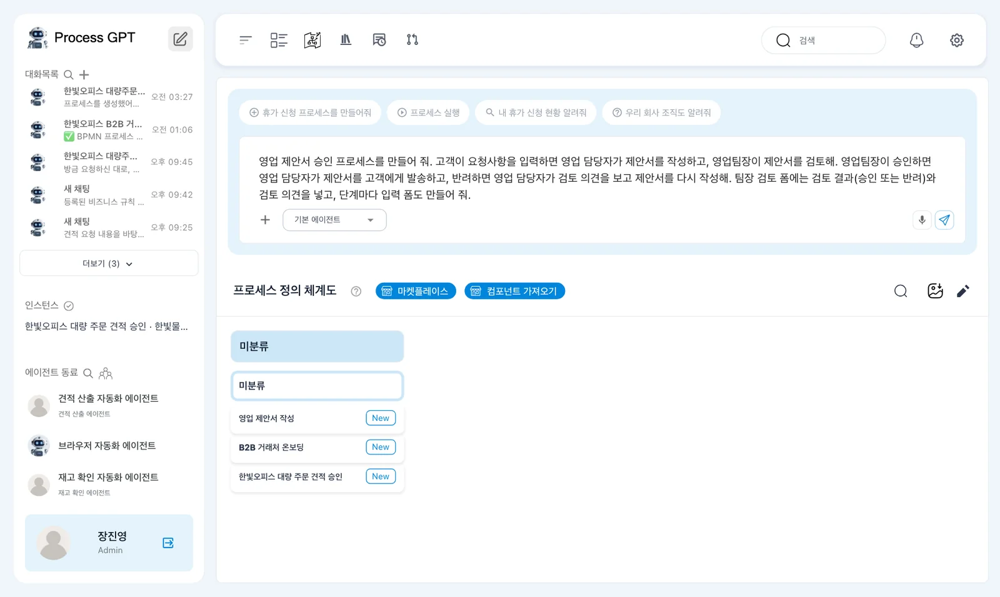
갈림길을 요청할 때는 누가 검토하는지, 승인하면 어디로 가는지, 반려하면 어디로 돌아가는지를 말합니다. 판단에 쓸 폼 칸인 「검토 결과」도 함께 요청합니다.
「컨설팅 기반 프로세스 생성 워크아이템이 생성되었습니다.」 뒤에 진행 막대가 보입니다. 실습에서는 「BPMN 프로세스 생성 · waiting_for_user · 72%」와 「사용자 확인이 필요합니다. 아래 질문에 응답해 주세요.」가 표시되었습니다.
따라 하기 2 — 세 쪽의 확인 창 제출하기#
이번 확인 창은 세 쪽입니다. 사람만 처리하는 프로세스이므로 세 쪽 모두 아무것도 선택하지 않습니다. 체크가 있으면 풉니다.
- 「1 / 3」의 「스킬 — 생성할 스킬 선택」을 확인합니다. 후보 「영업 제안서 작성 및 재작성」을 선택하지 않고 「다음」을 누릅니다.
- 「어떤 에이전트를 생성/연결할까요?」에서 후보 「영업 담당자 — 영업 제안서 작성 및 재작성 (신규)」를 선택하지 않고 「다음」을 누릅니다.
- 「DMN 의사결정 테이블을 어떤 게이트웨이에 만들까요?」에서 「제안서 승인 여부 판단」 후보를 선택하지 않고 「응답 제출」을 누릅니다.
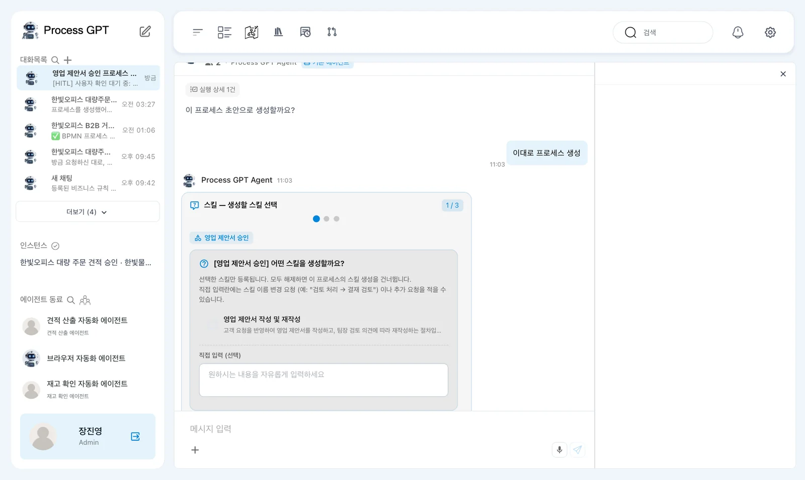
첫째 쪽에는 모두 해제하면 이 프로세스의 스킬 생성을 건너뛴다는 안내가 있습니다.
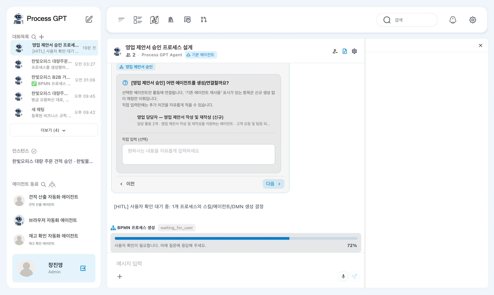
셋째 쪽 후보에는 승인하면 「제안서 고객 발송」으로, 반려하면 「제안서 재작성」으로 가는 두 분기가 표시됩니다. 선택하지 않은 게이트웨이는 BPMN 분기 조건만 사용합니다.
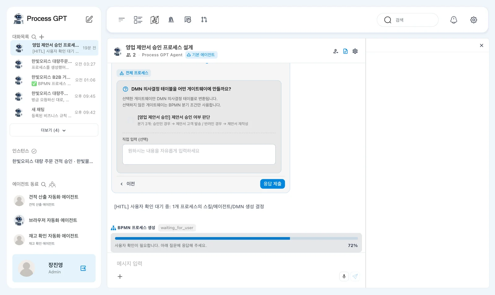
3장과 다른 확인 창
3장에서는 이 창 없이 바로 만들어졌습니다. 요청 내용과 회차에 따라 확인 창이 나올 수 있습니다. 스킬은 11장(준비 중), 에이전트가 맡는 단계는 13장, DMN은 15장에서 다룹니다.
「3/3개 응답 완료」 뒤 실습에서는 약 15초 만에 생성이 끝났습니다. 「✅ BPMN 프로세스 생성 완료 1개의 프로세스가 생성되었습니다. 프로세스 정의가 저장되었습니다. 왼쪽 메뉴에서 확인할 수 있습니다.」라는 안내가 나왔습니다.
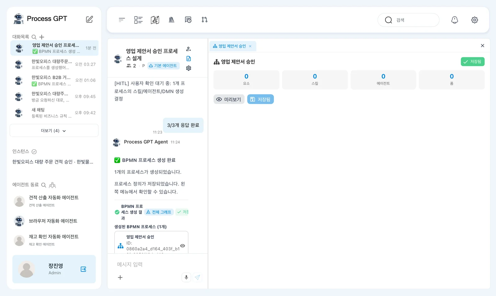
생성된 정의는 자동으로 저장되었습니다. 작업 폴더의 「저장됨」을 확인합니다. 이때는 저장 단추를 따로 누르지 않았습니다.
나의 업무에 남는 「pdf2bpmn」
이렇게 확인 창을 거쳐 만들면 장진영의 「나의 업무」에 「pdf2bpmn」이라는 업무가 「기한 지남」으로 남습니다. 프로세스를 만들 때 생긴 작업 기록이 끝난 것으로 바뀌지 않은 것입니다. 열거나 제출하지 않아도 됩니다.
갈림길과 돌아오는 화살표 읽기#
만들어진 흐름도에는 「고객」·「영업 담당자」·「영업팀장」 레인이 있습니다. 「요청사항 입력」에서 시작해 「제안서 작성」과 「제안서 검토 및 승인/반려」로 이어집니다.
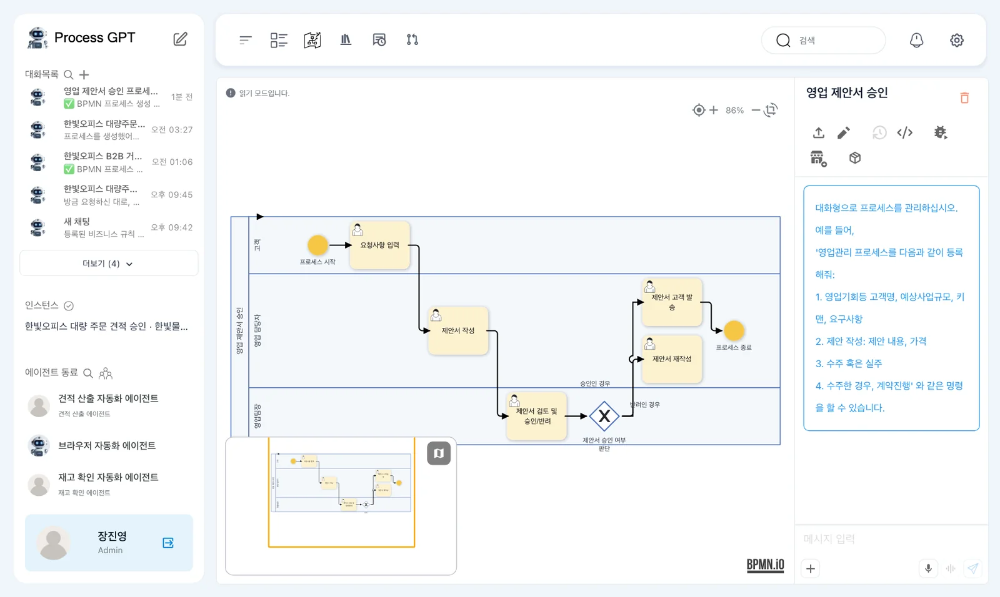
검토 다음의 마름모는 「제안서 승인 여부 판단」입니다. 마름모 안의 X는 배타 게이트웨이를 뜻합니다. 나가는 화살표 중 조건이 맞는 하나로만 갑니다.
| 화살표 옆 조건 | 다음 단계 | 이어지는 흐름 |
|---|---|---|
| 「승인인 경우」 | 「제안서 고객 발송」 | 프로세스 종료 |
| 「반려인 경우」 | 「제안서 재작성」 | 「제안서 검토 및 승인/반려」로 돌아감 |
재작성에서 검토로 돌아오는 화살표가 고리를 만듭니다. 반려는 이번 업무의 끝이 아닙니다. 제안서를 고친 뒤 같은 검토 단계를 다시 처리합니다.
생성된 이름을 확인합니다
단계·폼·조건 이름은 만들 때마다 조금씩 다를 수 있습니다. 이 장은 실습에서 생성된 이름을 사용합니다. 자신의 흐름도에서도 승인 경로와 반려 후 검토로 돌아오는 경로를 확인합니다.
따라 하기 3 — 레인 담당자 지정하기#
5장과 같은 방법으로 담당자를 지정하고 정의를 버전으로 저장합니다. 이번 정의의 편집 모드에서는 레인이 세로 열로 그려집니다. 레인 이름은 위쪽에 있습니다.
- 편집 모드에서 위쪽 「영업 담당자」 레인 이름을 두 번 누릅니다. 직접 사용자 선택으로 김민지를 지정합니다.
- 「영업팀장」 레인 이름을 두 번 누릅니다. 직접 사용자 선택으로 장진영을 지정합니다.
- 담당자를 지정한 정의를 버전으로 저장합니다. 「고객」은 실행하는 사람이 맡습니다.
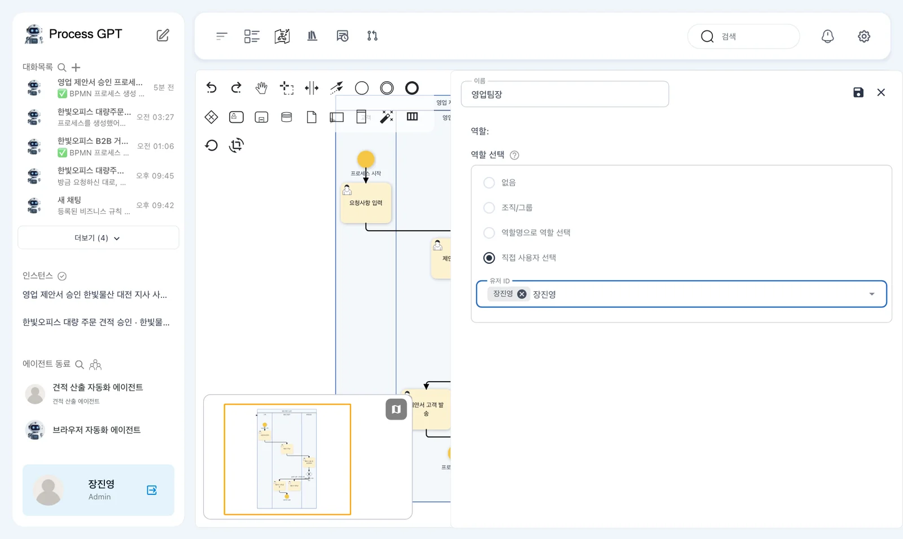
생성 직후의 자동 저장과 담당자 지정 뒤의 버전 저장을 구분합니다. 이제 지정한 담당자로 실행할 준비가 되었습니다.
따라 하기 4 — 장진영이 고객 요청 입력하기#
- 장진영으로 「영업 제안서 승인」의 「실행」을 누릅니다.
- 「역할 지정」에서 「고객」 장진영, 「영업 담당자」 김민지, 「영업팀장」 장진영을 확인합니다.
- 「요청사항」에 아래 내용을 입력하고 「제출 완료」를 누릅니다.
한빛물산 대전 지사가 사무실을 옮깁니다. 업무용 책상 30개와 의자 30개가 필요하고, 예산은 2,000만 원, 12월 첫 주 입주 전까지 설치를 원합니다.
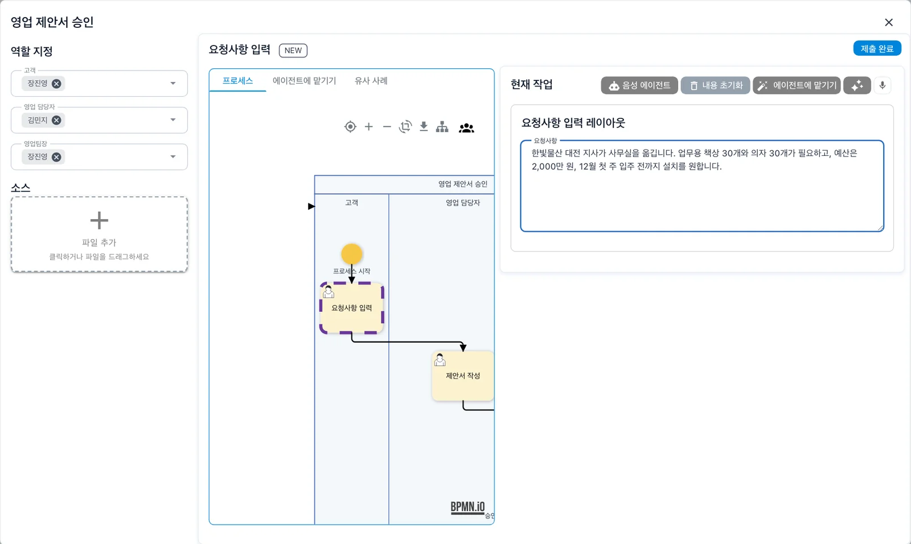
실습에서 생성된 인스턴스 이름은 「영업 제안서 승인 한빛물산 대전 지사 사무가구」입니다. 이제 김민지에게 온 제안서 작성 업무를 처리합니다.
따라 하기 5 — 김민지가 제안서 작성하기#
김민지의 「나의 업무」에서 「제안서 작성」을 엽니다. 「이전 작업 입력 내역」에는 「요청사항 입력 · 장진영」이 있습니다. 아래 폼은 「제안서 작성 레이아웃」입니다.
- 「이전 작업 입력 내역」에서 장진영의 요청사항을 확인합니다.
- 비어 있는 「고객 요청사항」에
대전 지사 이전 — 책상 30개, 의자 30개, 예산 2,000만 원, 12월 첫 주 입주 전 설치를 입력합니다. - 「제안서 내용」 이름 아래 「Report」라고 적힌 카드를 누릅니다.
- 열린 「컨텐츠 에디터」에 아래 제안 글을 쓰고 오른쪽 아래 「저장」을 누릅니다.
- 카드에 내용의 미리보기가 보이면 「제출 완료」를 누릅니다.
대전 지사 이전 제안: 업무용 책상 30개와 메쉬 의자 30개. 예상 금액 약 1,800만 원(부가세 별도).
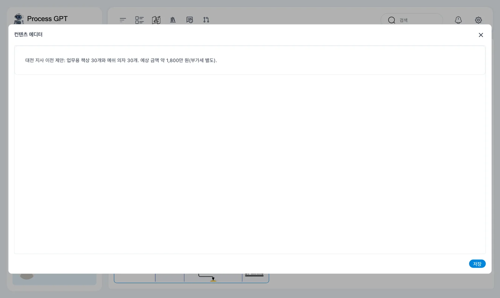
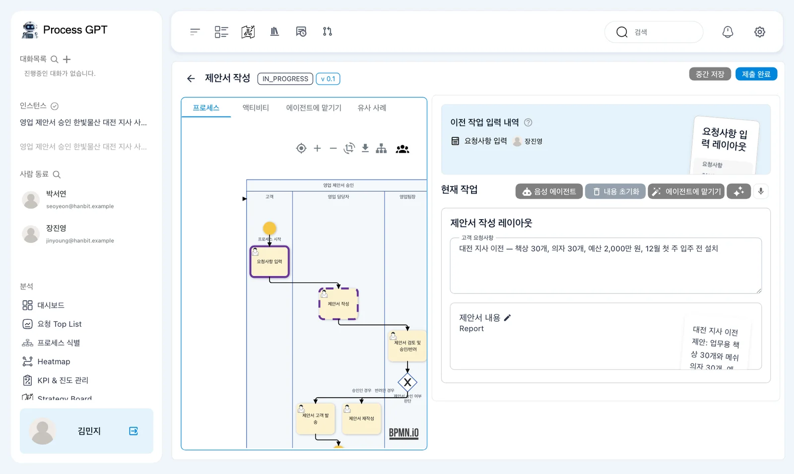
실습에서는 제출하고 약 5초 뒤 장진영에게 검토 업무가 갔습니다.
따라 하기 6 — 장진영이 반려하기#
장진영의 「나의 업무」에서 「제안서 검토 및 승인/반려」를 엽니다. 「이전 작업 입력 내역」에는 장진영의 「요청사항 입력」과 김민지의 「제안서 작성」 두 개가 있습니다.
- 앞 단계의 요청사항과 제안 내용을 확인합니다.
- 「검토 결과」 고르기 칸을 「반려」로 바꿉니다.
- 「검토 의견」에 아래 내용을 입력합니다.
- 「검토 결과」가 「반려」인지 확인하고 「제출 완료」를 누릅니다.
설치비와 설치 일정이 빠졌습니다. 대전 지역 설치비와 입주 전 설치 일정을 넣어 다시 작성해 주세요.
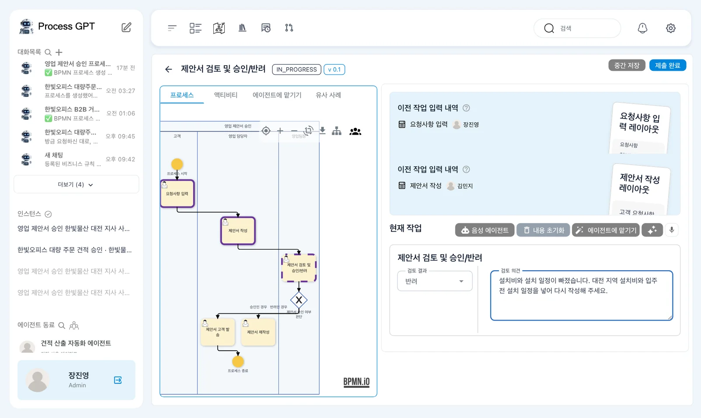
처음에는 승인이 선택되어 있습니다
이 실습의 「검토 결과」에는 처음부터 「승인」이 선택되어 있습니다. 반려 의견만 쓰지 말고, 고르기 칸도 반드시 「반려」로 바꿉니다.
실습에서는 약 8초 뒤 김민지에게 「제안서 재작성」이 열렸습니다. 「제안서 고객 발송」은 열리지 않았습니다. 갈림길에서 반려 조건에 맞는 길 하나로 간 것입니다.
따라 하기 7 — 김민지가 다시 작성하기#
김민지가 「제안서 재작성」을 엽니다. 「이전 작업 입력 내역」에는 「요청사항 입력」·「제안서 작성」·「제안서 검토 및 승인/반려」 세 개가 있습니다.
- 「이전 작업 입력 내역」의 장진영 검토에서 반려 의견을 읽습니다.
- 「제안서 재작성 입력」 폼의 「수정된 제안서」 Report 카드를 누릅니다.
- 「컨텐츠 에디터」에 아래 수정 내용을 입력하고 「저장」을 누릅니다.
- 「제출 완료」를 누릅니다.
대전 지사 이전 수정 제안: 업무용 책상 30개와 메쉬 의자 30개, 제품 금액 약 1,800만 원(부가세 별도). 대전 지역 설치비 포함, 12월 1주 차(입주 전) 이틀에 걸쳐 설치.
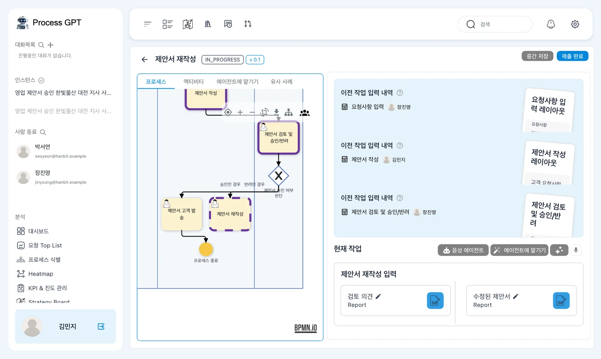
검토 의견은 앞 단계에서 읽습니다
재작성 폼의 「검토 의견」 Report 카드는 비어 있습니다. 장진영이 쓴 의견이 저절로 옮겨 오지 않습니다. 「이전 작업 입력 내역」에서 반려 의견을 확인합니다.
실습에서는 약 5초 뒤 장진영에게 검토 업무가 다시 열렸습니다. 흐름도의 돌아오는 화살표를 따라 같은 검토 단계로 돌아왔습니다.
따라 하기 8 — 승인하고 고객 발송 기록하기#
- 장진영이 다시 열린 「제안서 검토 및 승인/반려」에서 수정된 제안서를 확인합니다.
- 「검토 결과」가 「승인」인지 확인합니다. 「검토 의견」에
설치 일정까지 들어가 좋습니다. 고객에게 보내 주세요.를 입력하고 「제출 완료」를 누릅니다. - 김민지에게 열린 「제안서 고객 발송」을 확인합니다.
- 「제안서 고객 발송 입력」 폼의 「제안서」 파일 칸은 이 실습에서 비웁니다. 「검토 결과」 글 칸에
승인 — 설치 일정 포함 수정본 발송을 입력합니다. - 「제출 완료」를 누릅니다.
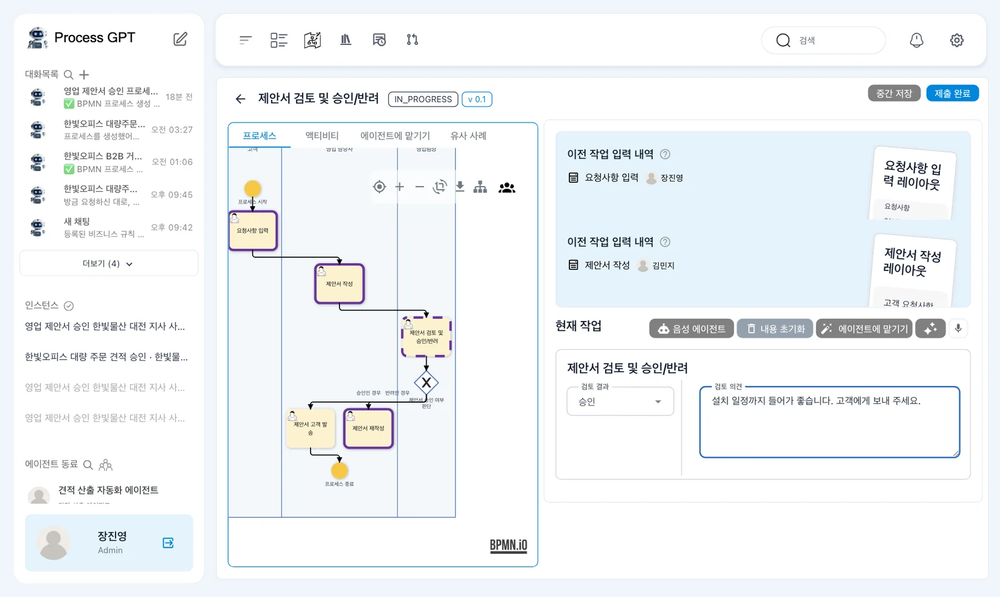
실습에서는 승인 제출 후 약 3초 뒤 김민지에게 「제안서 고객 발송」이 열렸습니다. 이번에는 승인 조건에 맞는 길로 갔습니다.
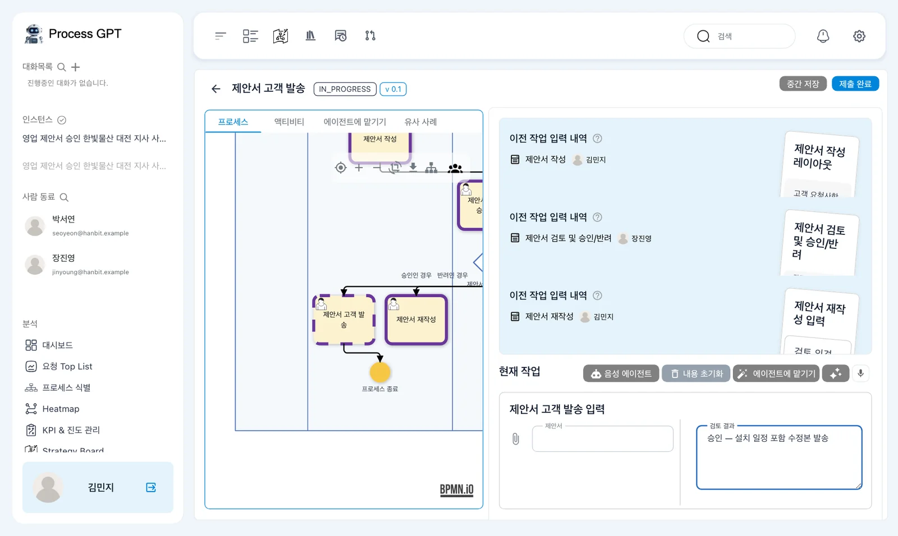
이 프로세스는 실제 이메일을 보내지 않습니다. 「고객 발송」은 담당자가 보냈다고 기록하는 단계입니다.
따라 하기 9 — 전체 완료 확인하기#
- 인스턴스 상태가 「COMPLETED」인지 확인합니다.
- 장진영 화면의 칸반보드 「완료됨」에서 다섯 카드를 확인합니다.
- 검토를 두 번 처리했지만 「제안서 검토 및 승인/반려」 카드는 하나인지 확인합니다.
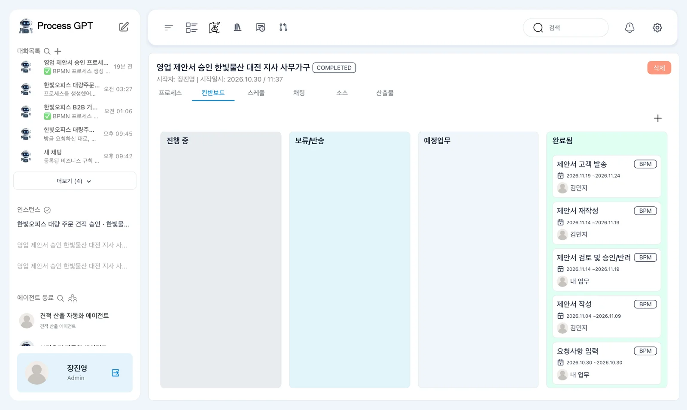
「제안서 고객 발송」·「제안서 재작성」·「제안서 작성」의 담당자는 김민지입니다. 「제안서 검토 및 승인/반려」와 「요청사항 입력」은 장진영 화면에서 「내 업무」로 보입니다.
검토 카드가 하나인 것은 같은 단계가 다시 열렸기 때문입니다. 반려 후 재작성과 두 번째 검토를 거쳐, 마지막 고객 발송 단계까지 제출하면서 인스턴스가 끝났습니다.
다음 장으로#
검토 결과로 갈라지는 길과 재작성 뒤 검토로 돌아오는 흐름을 실행했습니다. 여기까지 사람이 하는 프로세스를 만들고 실행했습니다. 8장부터는 AI 에이전트 쪽으로 넘어가, 먼저 에이전트가 근거로 쓸 회사 문서를 지식 베이스에 올립니다. 견적 총액(3,000만 원 미만·이상)으로 갈리는 견적 프로세스는 13장에서 에이전트와 함께 실행합니다.
확인 문제
- X가 있는 마름모에서는 나가는 화살표를 모두 따라가나요?
- 반려하려면 무엇을 바꾸고, 김민지는 어디에서 반려 의견을 읽나요?
- 검토를 두 번 했는데 완료된 검토 카드가 하나인 이유는 무엇인가요?
답
- 아닙니다. 배타 게이트웨이는 조건이 맞는 화살표 하나로만 갑니다. 이번에는 반려하면 재작성으로, 승인하면 고객 발송으로 갑니다.
- 처음 선택된 「검토 결과」의 「승인」을 「반려」로 바꿉니다. 김민지는 「이전 작업 입력 내역」의 장진영 검토에서 의견을 읽습니다.
- 재작성 뒤 같은 검토 단계가 다시 열렸기 때문입니다. 두 번째 검토를 위한 별도 단계가 생긴 것은 아닙니다.